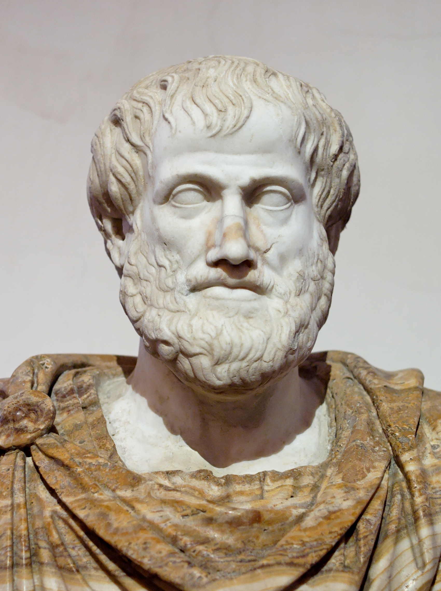
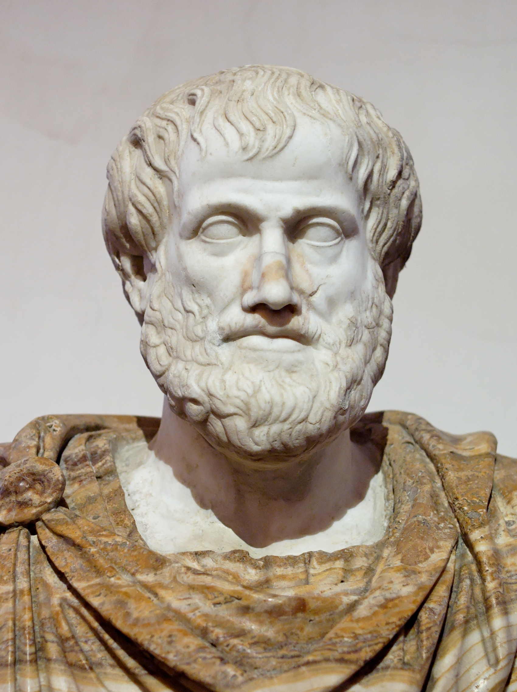

Meet Our Team

Scrum Master & Full-Stack Developer
Tevin majors in Finance, Computer Science, and Mathematics who thrives at the intersection of data, design, and decision-making. As Scrum Master, he orchestrates productivity and flow while bringing a founder's mindset to every sprint.
 



Inspired by systems thinking, cool people, and the pursuit of elegant simplicity.
Backend Developer
Jason majors in Computer Science with a concentration in Cyber Security. He's most passionate about free open-source software, digital privacy, and usable security.


Constantly learning and growing, focused on producing high-quality work at peak efficiency. Forever an AI hater.
UI/UX Designer
Emily is a UI/UX designer with a passion for creating user-friendly interfaces.
Frontend Developer
Walker majors in Computer Science with a concentration in A.I.,Robotics and Gaming. He is passionate about combining technology and creativity to build interactive experiences.


Fueled by a love for play, building worlds where imagination meets code.
Frontend Developer
John is a skilled frontend developer with 5 years of experience in creating responsive web applications.